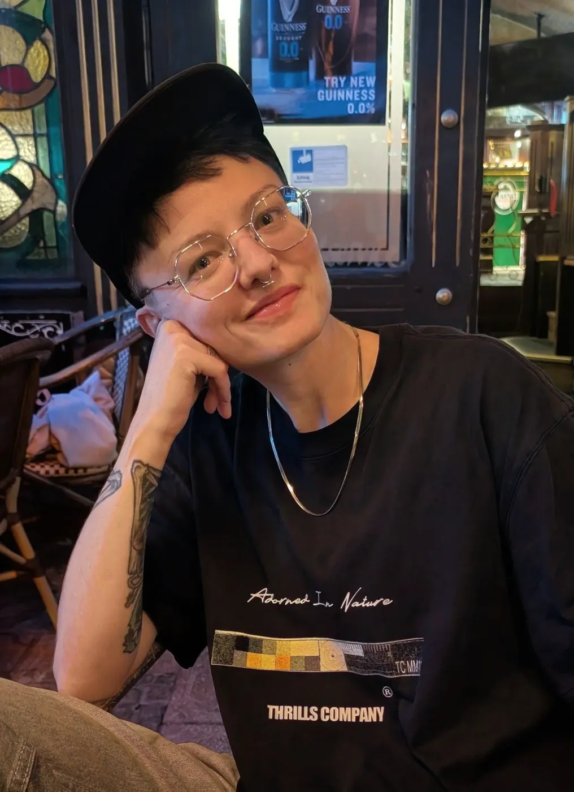

It’s 2026, we’re dropping the mask
The world is objectively exhausting and terrifying right now and you deserve a space for yourself to decompress and be real.
Here, you get to just be you
A lot of people are using the word “affirming” and while it’s great to see overall, I think we’re getting lost in the sauce and the term is over-saturated.
In my coaching practice I’m all about those of us who are called freaks, weirdos, and outsiders. Although I have come to a place where I can now embrace and celebrate who I am, it doesn’t mean those words don’t still carry weight.
But here, you get to release that burden and just be you. And from there, be the version of yourself you have been working towards for years. Things are tough. I am here to make it a bit easier for you so that the good days get longer and the bad days pass easier.
Get started
Hi y'all, I'm Elliot (they/she)
I switched to coaching in 2025 after years as a therapist and the short version of why is that I got tired of watching a broken system harm the people it's supposed to help. Licensure requirements don't protect clients from bad therapists, restrictions make it hard to find competent providers, and clinicians are overworked, devalued, and underpaid. I could go on but I won't.
What I never got tired of was the actual work— being in the room when something changes for the better, watching someone's life gain more ease or clarity. That’s why I do this.
My clinical background gives me real insight into emotional patterns and human behavior, but coaching lets me work differently. The focus isn't on what's "wrong" with you, it's on who you want to become and what's getting in the way. I'm not here to treat mental health conditions. I'm here to help you figure out your shit and make moves.
That looks different for everyone:
- Deconstructing societal oppression to explore your realest self? Check.
- Burnt out and looking for something new? Check.
- Navigating relationship strain and want to actually communicate better? Check.
I'm good at this because I've been through some shit too. When I say I can help you navigate stress and grow, it's because I'm doing it myself.
I relocated to Berlin in 2026 and work virtually with clients throughout Germany, the EU, and beyond.
Let's connectWhere the work comes from
Life Experience
A great coach or therapist is made because they’ve also gone through some sh*t in life (in my strong opinion). My empathy is genuine and my ability to relate, even where we differ, is at least in part, because I have navigated my own struggles. Basically, I get it.
Lots of Reading, Listening, and Ongoing Trainings
I have read so many books, yes, but I also expose myself to learning from the direct experiences of others. I learn a lot by just listening. To my clients, my friends, and generally the people around me. I also engage with continuing education regularly and have completed trainings in things ranging from EMDR (a therapeutic modality) to Neurodivergent Somatics to Gender Identity exploration and all the in-between related to what I focus on most.
MA Marriage and Family Therapy
I received my Master’s in Marriage and Family Therapy in December 2021.
Ready to start?
Reach out to schedule a consultation!
elliot@neurospacecoaching.com